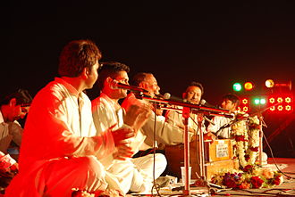

Qutub Festival:
Qutub Festival is a three-day festival usually held in November–December in the Qutub complex in the Indian metropolis of Delhi organized by Delhi Tourism, Govt. of Delhi.The festival showcases the cultural art forms of the country but also puts this classic structure of Qutub Minar in the cynosure of national and international attention.